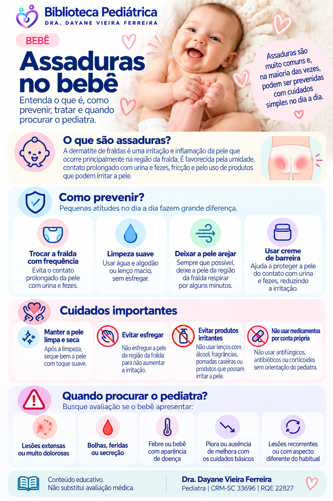

Assaduras no bebê
Como prevenir a dermatite da área das fraldas, cuidar da pele irritada e reconhecer situações que precisam de avaliação.
Como prevenir?
Troque com frequência
Evite manter a pele por longos períodos em contato com fralda úmida ou suja.
Limpeza suave
Limpe sem esfregar. Produtos irritantes e limpeza excessiva podem piorar a barreira da pele.
Deixe arejar
Quando possível, alguns períodos sem fralda ajudam a reduzir a umidade.
Proteja a pele
Cremes de barreira podem ajudar a proteger a pele do contato com irritantes.
Quando pode não ser uma assadura simples?
Lesões persistentes, muito intensas ou com características diferentes podem estar associadas a outras dermatites ou infecções. Por isso, não é adequado tratar toda vermelhidão da região da fralda da mesma maneira.
Quando procurar o pediatra?
- lesões extensas, muito dolorosas, com bolhas, feridas ou secreção;
- febre ou bebê com aparência de doença;
- vermelhidão que piora ou não melhora com cuidados básicos;
- lesões recorrentes ou com aspecto diferente de uma irritação simples.
Infográfico

Fontes e revisão
SBP — Dermatite de fraldas: diagnósticos diferenciais
SBP — Cuidados com a pele do recém-nascido
Última revisão: setembro de 2026.